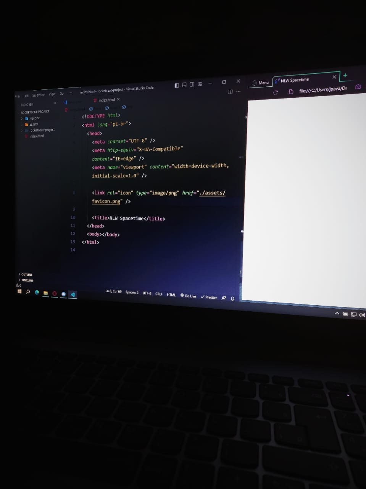

16 de maio de 2023
Primeiros contatos com a programação

Meu ponto de partida à programação foi com esse projeto, onde aprendi a teoria por trás do HTML e CSS. Em seguida, apliquei esses conhecimentos na prática. Agora, vocês podem vizualizar por meio dessa cápsula do tempo toda a minha trajetòria acadêmica.